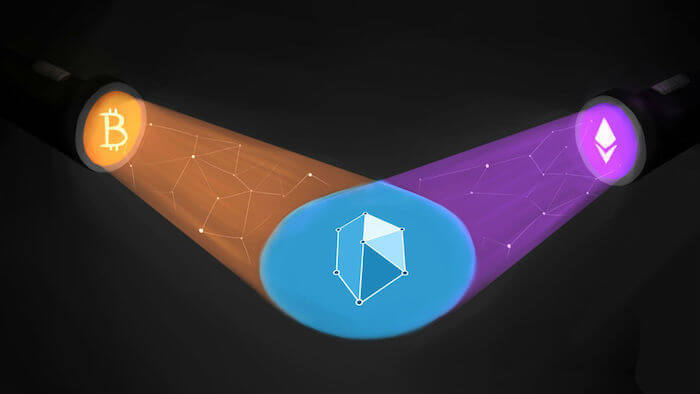
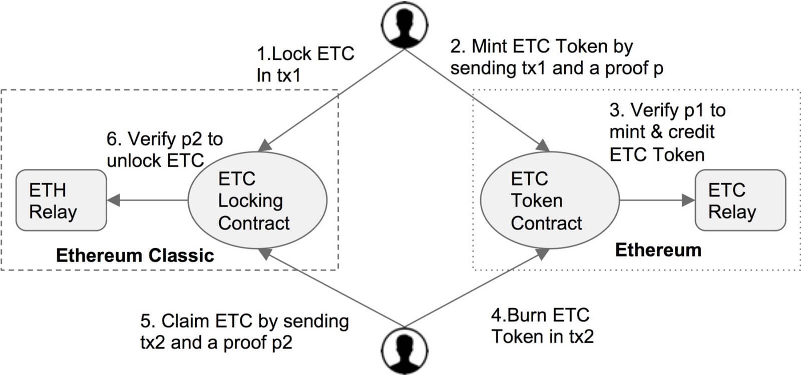

Chain Relays or A Practical Approach for Cross-chain Trades
KyberNetwork’s long term vision is to support trading between different cryptocurrencies, e.g between BTC and ETH, ETC and any ETH tokens. In order to do so, we rely on technology and protocols that allow communication between these cryptocurrency networks. We are glad to see many qualified teams including Polkadot and Cosmos — just to name a few — working on the problem. Unfortunately, these projects are still under heavy development and either have yet to announce any release date (e.g. Polkadot) or only work for proof of stake-based blockchains (e.g. Cosmos). Thus, a practical solution for interchain communication between existing blockchains is still yet to be explored. In this post, we discuss a practical solution that has been largely overlooked: chain relays. We conclude by describing how KyberNetwork is planning to use and maintain chain relays for our use cases.
What is a Chain Relay?
A chain relay for a blockchain X, or X-relay for brevity, is a way to implement and maintain light client for blockchain X within an Ethereum smart contract. The contract essentially stores all block headers which are much lighter than the size of the chain state or the entire blockchain, hence the term light client. With the block headers, it is sufficient to verify if a transaction has been included, or even the blockchain state, depending on what are stored in a block header. Thus, X-relay allows any contract in Ethereum to verify transactions, and sometimes even account states of the blockchain X via the implemented light client.
Why Chain Relays Are Powerful?
Having a light client of a cryptocurrency X running on Ethereum enables strong interoperability between Ethereum and the said cryptocurrency. For example, one can create a contract to receive payment in X-coin by fixing a beneficiary address in X that one controls. The contract then verifies any transaction via X-relay to see if the exact amount has been sent to the given address. Chain relays simply break the boundary between different cryptocurrencies/ blockchains and, most importantly, does not require any trust assumption.
What Are the States of Existing Chain Relays?
The first chain relay on Ethereum was BTCRelay developed by Joseph Chow. You can watch to his talk in Devcon 1 here. BTCRelay, though promises interesting applications, has not gained much adoption yet. At the time of writing, the last BTC block relayed to the contract was 18 days ago. Part of the reasons for the low adoption was that the relay is one way: one cannot relay Ethereum transaction back to Bitcoin.
Recently, I jointly developed PeaceRelay to allow interchain communication between different Ethereum based blockchains (e.g. Ethereum and Ethereum Classic). A functional prototype has been released that allows the moving of ETC to and from Ethereum blockchain. While it is still expensive to naively maintain PeaceRelay (due to the high gas cost), PeaceRelay is ready for practical uses today.
There has been some effort in building a ZECRelay for ZCash on Ethereum. For example, BLAKE2 hash function is under consideration to be available in Metropolis hard fork. If this EIP for BLAKE2 gets approved before Metropolis, and given that zkSNARK is already included in Metropolis, ZECRelay on Ethereum can be built efficiently.
Building relays on Ethereum for cryptocurrencies like LiteCoin and DogeCoin that use Scrypt proof of work is trickier as the gas required to verify/ compute a Scrypt hash is enormous. There is an 1,5oo ETH bounty for building Doge-Ethereum relay (used to be 6000 ETH), but no one has been able to claim it so far. The feasibility of practical relays for these Scrypt-PoW cryptocurrencies still remain unknown.
What Chain Relays Mean to Decentralized Exchanges like KyberNetwork?
One can easily create a new ERC-20 token backed by X via a simple minting process. Specifically, the ERC-20 contract will mint new X-token if one creates a transaction on blockchain X that deposits X-coins to a predefined address. Since the ERC-20 contract can verify the validity of the transaction via X-relay, it can be guaranteed that some X-coins have been deposited in order to mint the corresponding amount of new tokens, as long as X-chain is not vulnerable to 51% attacks (if it is, X is worthless anyway). This allows anyone to trade X-coins (e.g. Bitcoin, ZCash, ETC) to any ERC-20 tokens on Ethereum.
Things are great so far. We have been able to deposit X-coins to mint ERC-20 X-tokens, trade X-tokens with others ERC-20 tokens trustlessly with on-chain exchanges like KyberNetwork. However, something is still missing. How does one convert X-tokens back to X-coins? This is where things go tricky but interesting. A good solution is to deploy ETH-Relay on X chain, thus forming a 2-way relay between Ethereum and X chain. Now one can burn X-tokens on Ethereum and submit the proof to X chain to claim the deposited X-coins. An example of this scenario is the two-way relay between Ethereum and Ethereum Classic, which is depicted in the figure below. Two-way relay enables a great use-case in which trading between ETH and ETC can be done in a trustless manner: no trusted intermediary is needed to facilitate the trade.
The 2-way relay also allows interchain communication between private and public Ethereum based blockchains. EEA has recently become the largest blockchain consortium, one can predict that many private blockchains based on Ethereum will be launched. As an example, MAS, the central bank of Singapore, plans to tokenize Singapore Dollars in its Ethereum based private chain. SGD-Relay will allow users to move SGD between the MAS private chain and the Ethereum public chain, thus allowing on-chain trading between crypto tokens and fiats in the future.
However, the ideal solution for claiming X-coins does not work when X does not support expressive smart contracts like Ethereum. For example, one cannot yet deploy 2-way relay between Bitcoin and Ethereum, or between ZCash and Ethereum. Further, the gas cost to maintain PeaceRelay is expensive, making it impractical to verify all block headers while maintaining the 2-way relay between Ethereum and Ethereum Classic. We next discuss how KyberNetwork plans to deploy and maintain these relays in practice.
KyberNetwork’s Practical Deployment of Chain Relays
Even though we have to wait until Metropolis hard fork to determine if we can build ZECRelay on Ethereum, we can already deploy and run BTCRelay and PeaceRelay today. KyberNetwork’s vision is to maintain the two relays to support trading Bitcoin/ETC with ETH and Ethereum’s tokens. However, there are still two remaining questions that we need to address to achieve that vision.
- How to maintain PeaceRelay without paying 2.6 millions of gas for each block header?
- How to withdraw BTC token on Ethereum to claim BTC on Bitcoin?
To solve the first challenge, we (i.e. KyberNetwork), as the maintainer of PeaceRelay, will keep relaying ETC block headers. To avoid verifying all blocks, we put a side a large security deposit of, say, 1000 ETH in the relay contract. If there is any wrong block header, one can submit a proof to the contract and claim our deposit. This security deposit disincentivizes us from submitting wrong block headers, and incentivizes others to check our submitted block headers. It is worth noting that detecting wrong block headers is easy, can be done by a simple script that we will make publicly available. This approach resembles the the bounty idea used in TrueBit to prevent solvers from providing wrong solutions and incentivize others to check submitted solution.
The second question is trickier as we cannot deploy ETHRelay or any locking contract (see the figure above) on Bitcoin. One can wait until Rootstock launch and build a 2-way relay between ETH and Rootstock to move Bitcoin to and from Ethereum . Another practical solution is to have a pool of backers who receive BTC and deposit their ETH in the BTC token contract to guarantee that when users burn their BTC Token, the backers will get back their Bitcoin. Otherwise they can complain to the contract and get much more in ETH from the deposit pool. To incentivize the backers to put their ETH as the deposit and to facilitate the withdrawals, the backers can take fees per every deposit/ withdrawal.
Final thoughts
Although we currently advocate and support chain relays as our practical approach for cross-chain trading, we are consistently searching and looking out for new developments of prospectus solutions. Our vision is to have trustless and on-chain trading between different cryptocurrencies on KyberNetwork in early 2019. Until then, we are open to all candidates.